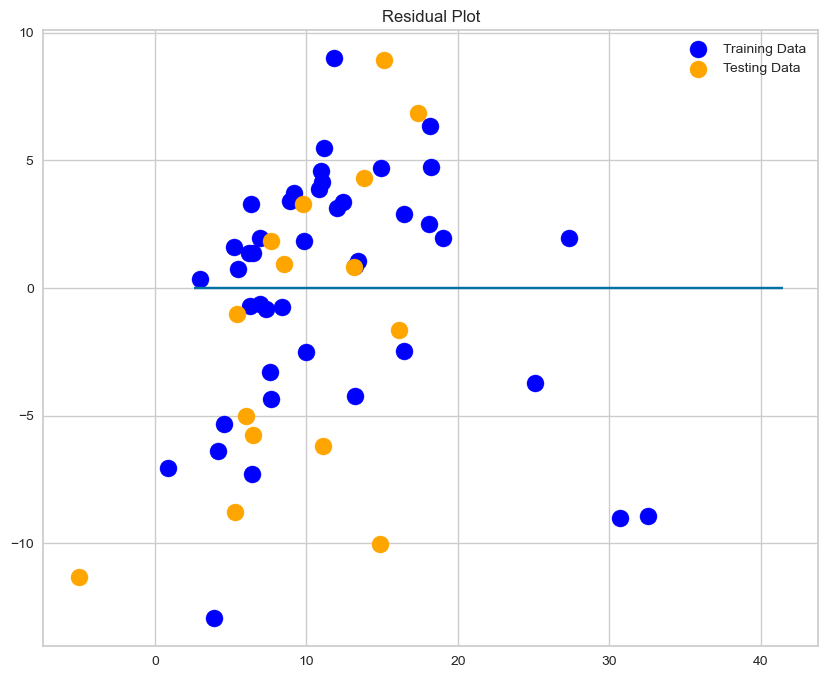
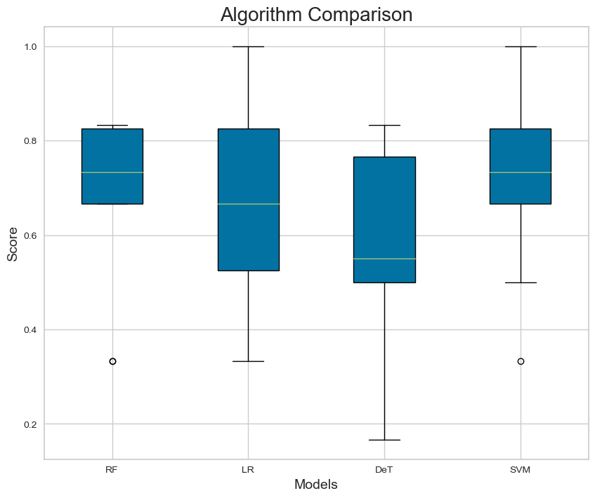

Mental Health Versus Suicide: Predicting Suicide Rates from Mental Health Risk Factors
Mental Health Versus Suicide: Predicting Suicide Rates from Mental Health Risk Factors
In this project we used various machine learning models, trained and tested the data to see the models ability to predict suicide mortality rate from various macro socio-economic factors in the national level. We used linear regression, logistic regression,support Vector Machine, decision tree, and random forest model. We note differences in accuracy (and thus, effectiveness), the models has toward the entire dataset. We noticed similar reapearing patterns that we knew would serve of importance when predicting suicide mortality rate from various macro socio-economic factors.
The first step in our analysis was to clean, and pre-process our dataset to make ready for machine learning analysis. We cleaned, explored and visualized the data. The pre-processing normalize the data for ML analysis.
Before the ML analysis we tried to see if there is any coorelation between factors on Suicide mortality rate per 100,000 people.
In the coorelation analysis we have found a positive (0.5) correlation between Suicide mortality rate, and people seeking of social protection, and labor programs (% of population).
Previous research identified that there is a solid association between economic strain and suicide, little attention has been paid to how specific welfare policies that are designed to alleviate economic strain may influence
suicide rates. There is a growing body of research that is using an institutional approach to demonstrate the role of welfare-state policies in the distribution of health. However, this perspective has not been applied yet to the
investigation of suicide.(Simone Rambotti 2019)
We have found also a negative(-0.5) correlation between suicide mortality rate (% of population) and coverage of labor force with basic education (% of total working-age population with basic education). When Countries having
a population at least with basic education is higher negatively relate with Suicide mortality rate. Which means when the poulation education distribution increases Suicide mortality rate decreases.
The first three models we executed are linear regression, decision tree regression, and support vector regression (SVR) to estimate the suicide mortality rate (continous dependent variable) on the estimator variables. The result from this three models showed that lower R-Squared value (R2), and higher mean square error (MSE). However, comparing the above three models linear regression explained the dependent variables (suicide mortality rate) very well by the independent variables (predictor variables) with R-Squared value -0.35 and mean square error (MSE) 37.89.
To test the stated models we grouped our continous dependent variable ("Suicide_mortality_rate_per_100k") in to two groups, below and above the mean value (11.5). Suicide mortality rate above 11.5 would be high and below 11.5 would be low. Afterward we executed logistic regression, support Vector Machine, decision tree, and random forest model. The finding from this models showed that the models accuracy to peredict the dependent variable is low but, compering the models support vector machine explain the data very well with 0.69 accuracy.
In conclusion, mental helath and suicide is an important cause to study because we are losing so many lifes in the world because of suicide. Our project focused identifying macro level socio-economic factors that would cause the problem, and we believe that if socio-economic factors, and countries polices towards mental health changed the issue will be solved somehow. However, the issue is too complex, and it depends on the indviduals subjective expiriance, so a collaborative, and a comprehensive approach is important to address the issue. Specific to this project we have been challenged with the data quality (so many null values), we hope if the models applied with a better data we can see more tangible factors that would predict the problem.